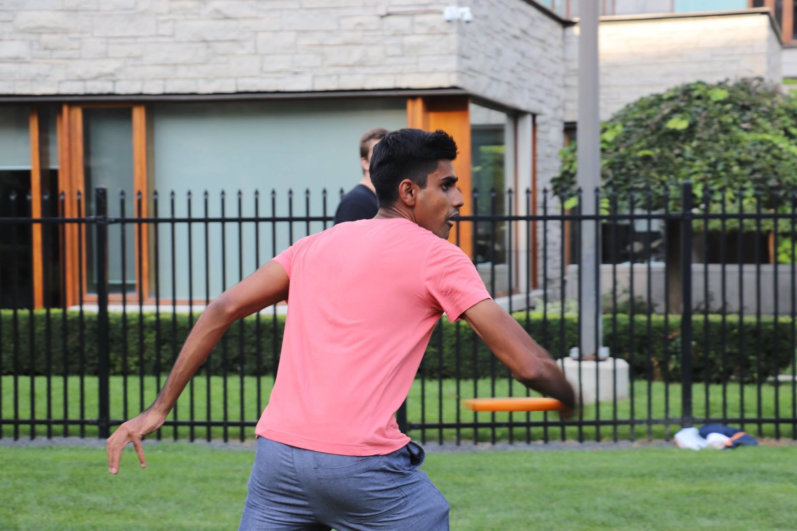
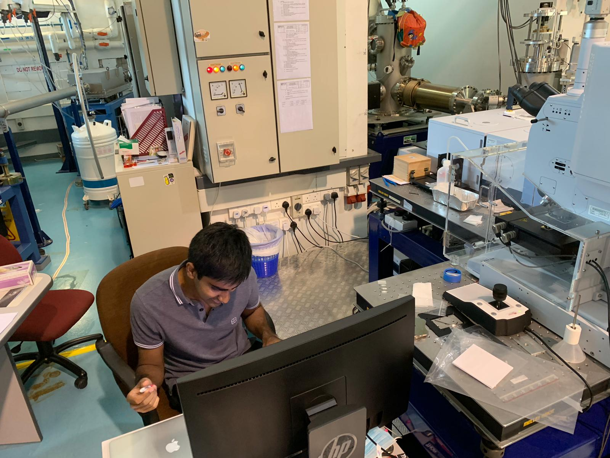

About Me

I am an undergraduate physics student who is about to finish my undergraduate degree at the
University of Toronto. Before that I was a Lance Corporal in the Singaporean Armed Forces as part
of my mandatory national service (conscription). I completed the international baccalaureate (IB)
at United World College, South East Asia, Singapore. Outside of my academic work, I enjoy
cycling, hiking, kayaking and generally spending time outdoors. When I'm not outdoors, you'll
find me volunteering with student groups and going to music concerts.
Education:
(Hons.) Bachelors of Science, University of Toronto, 2022
Research Interests:
Cosmology (Computational, Theoretical, Observational)
Astro-statistics
Machine Learning
Small Satellite Design
Publications: Google Scholar
Selected Coursework:
General Relativity 2 (Cosmology): Final Paper
Advanced Practical Physics: Final Paper
Research

Astrophysics Research Intern, Dunlap Institute of Astronomy and Astrophysics
Machine learning intern at Dunlap Institute
for Astronomy and Astrophysics. Model fitting visible counterparts to gravitational wave events.
Created a software which predicts new light curves associated with binary neutron star mergers
using machine learning. Used Gaussian processes and principal component analysis in training stage.
Used Markov-chain Monte-Carlo in Bayesian inference stage.
Machine Learning Intern, University of Toronto
Image classification of Martian topographic features. Created an efficient
scalable machine learning model in python using sklearn. The model was tested against
independent Martian surface data and used supervised machine learning methods,
thresholding and mask detection. The Martian surface data was provided by The
National Aeronautics and Space Administration (NASA) HiRISE instrument on the Mars Reconnaissance Orbiter. Model training was done on a Linux server.
Quantum Computing Intern, Center for Quantum Technologies
Research intern at the National University of Singapore (NUS). Conducted research in
circuit quantum electrodynamics by exploring a software automating the discovery of
superconducting qubits. The software used quasi-newton numerical optimisation which was
tested using different qubit systems in the transmon qubit regime.
Beamline Scientist, Singapore Synchrotron Light Source
Summer attachment as a beam line scientist at the Singapore Synchrotron Light Source (SSLS)
conducting research with Fourier Transform Infrared Spectroscopy (FTIR). Developed a software with
R implementing multivariate analysis methods on spectral samples through RStudio and shiny. International Atomic
Energy Agency (IAEA) Coordinated Research Project F11021. Research and analysis into the adulteration of
edible birds nest. Paper to be published pending. Conference presentation at "FT-IR Spectroscopy in Microbiological and Medical Diagnostics",
Robert Koch-Institute, October 10 - 11, 2019.
Thermal Team, University of Toronto Aerospace Team
Development of the Heron Mk-II Satellite. Satellite scheduled launch in early 2021.
Designing and testing battery insulation to maintain operating battery temperature during satellite’s
orbit, then acted as a consultant for the payload bay insulation. Ground station team: created and
tested hardware components for ground station by surface mount, through-hole and solder paste stencilling.
Contact
Email: utkarsh7236@gmail.com
Address: McLennan Physical Laboratories, Department of Physics, Toronto, Ontario, Canada